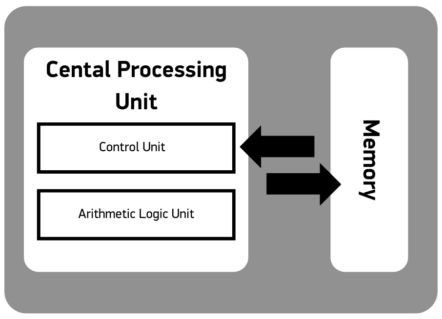

Launching into
Computer Science
My reflections on the units included within the module.
Unit 1: Computing as a Profession - Responsibilities and Challenges
My reflections about the unit
The main theme of the first unit was the computing as a profession and the challenges and threats involved in the modern world of advanced technology. Considerable amount of reading was focused on the ethics and regulations of several professional bodies such as IEEE or BCS. Another important topic was the threat posed on the privacy. Apparently, a lot of data about individuals is gathered on various venues (social media, health apps, etc.) without explicit consent and this leads to privacy issues. Even when the data is gathered with consent, problems occur when the data is processed extensively. In order to prevent such issues, some precautions and legislation like GDPR is put in place. Finally, we had the opportunity to gain a general understanding of cyber security, common threats (e.g. virus, worms, Trojan horse, etc.) and the measures to prevent them (e.g. antivirus software, firewall, etc.).
We also had a chance to discuss the career path we would like to take, and the challenges attached to it. I read many interesting ideas from the fellow students, and especially the discussion about the AI caught my attention as this is a rising, and nevertheless, a controversial field.
In my opinion, this unit was more about informing the would-be computer scientists about the ethics of their future profession as well as the rules that they must adhere to. Since misconduct would lead to serious consequences, I think this was the right approach. After reading about the aforementioned topics, I feel more confident about ‘dos and don’ts’ of the computing professionals. Moreover, the information we had about the cybersecurity threats is very useful both for our daily lives as well as for our future profession.
From this point onwards, having read about much of the rules and regulations about privacy, I will be more sceptical about personal data when working on user-facing projects. Furthermore, even though I already knew a lot about the types of cyber security threats, the chapter about cybersecurity helped me to cement my knowledge.
All in all, this unit provided me with a fresh perspective which, I believe, will prove useful during my studies in coming weeks and months.
Forum discussion:
What IT role would you like to assume and what kind of challenges are attached to the role you selected?
Personally, I am interested in the role of software developer, possibly not as a full-stack developer (Taivalsaari et al., 2021) but rather, a developer who is focused on a specific skill and working in a larger team.
I believe, among the main challenges for this role are:
- Competence: I need to have the necessary knowledge in a number of programming languages as well as some other tools which could come in handy in software development.
- Self-learning: I need to keep my competence up to date by constantly monitoring the latest developments in the field of Computer Science, be it a new programming language or a new concept, etc.
- Teamwork: Since I am more interested in working in a team in large projects rather than working alone, I need to display a positive attitude towards my colleagues and be able to work with them in harmony. This also includes helping my teammates to develop themselves and learning from them.
- Ethics: I must adhere to the code of ethics accepted widely by the industry (BCS, 2021).
Key takeaways:
- Types of cyber attacks include viruses, worms, Trojan horses, spyware, phishing, spam, denial of service (DoS) and distributed denial of service (DDoS).
- Protection measures against the cyber attacks include firewalls, spam filters, proxy servers, antivirus software and various techniques called “cryptography” (encryption, certificates, authentication, digital signatures, etc.)
- There is a thin line between sharing one’s personal information on voluntary and involuntary basis.
- The data collected by the companies (sometimes with a small incentive like a discount) are very precious, but the innovative way to use them (such as identifying purchase patterns of customers and offering them a customized promotional campaigns) make it much more valuable.
- The most powerful way to avoid the database abuses is the public opinion. Legal punishments and fines might prove useful, but what most companies fear most is a negative public opinion against themselves.
- There are a lot of codes and rules published by national bodies or professional associations about how to handle the personal data as well as the ethics of IT professionals. While each of them is unique in the way they are structured or written, all of them converge towards a more responsible use of personal date, a greater care to privacy and an ethical way to practice the professions - which leads us to some globally accepted principles.
Unit 2: Introduction to Computer Architecture and the Functionality
My reflections about the unit
Unit 2 elaborates on what is going on under the hood once we turn on a computer. The reading covered everything from the basics like boolean operations and gates to more complex subjects like CPU architecture and Virtual Machines. The most interesting topics for me was how the flip-flows are used to “remember” a bit, the way the controllers are connected to the bus and compete over the use of bus, the evolution of storage systems and finally, the types and inner workings of the virtual machines. I was especially intrigued by the latter subject, since I have an experience with VMs as an end user, having used all three major operating systems (Windows, MacOS and Linux-based systems).
In the Seminar 1 which we had this week, we had a chance to discuss these topics in a slightly different manner than shown on our core book with our tutor and it proved very useful. We put a special emphasis on the types of computers based on different criteria such as purpose, functionality, etc. In the end of the seminar, we were given some questions to answer in the forum. You can read my answers to the questions below.
To summarize, I see unit 2 as the foundation of the computer architecture and how the OS/applications and the computer system interact with each other. It helped me to fill in the gaps in my knowledge and to develop a better understanding of the basis concepts of computer science.

Figure 1: Central Processing Unit.
My answer to the Seminar 1 questions:
The difference between registers and memory:
I will explain the difference between the registers and memory with a “kitchen metaphor”: Imagine a kitchen in which a mother is preparing a meal. There are the groceries (eggplants, tomatoes, potatoes, etc.) on the table. The mother first takes the eggplants from the table and puts them to the kitchen counter and cuts it to small pieces. When she is done with it, she puts the small pieces to the saucepan and empties the kitchen counter. Then, she takes the tomatoes from the table and puts them to the kitchen counter and starts working on them. When she is done with it, she adds them to the saucepan too.
Now, in this metaphor, the table is the memory – it is where we have all the data (the groceries) and the kitchen counter is the register (a temporary place where we process the data). If we extend our metaphor a little bit further, the cellar is the secondary memory (e.g. hard disk) which is not volatile and which accommodates all the groceries – even those that we are not interested in using them at that very moment.
In a nutshell, the register is the temporary place where the CPU stores the data it fetches from the memory, for the arithmetic/logic unit to process it according to the instruction set given.
The main functionalities of a CPU are (Brookshear & Brylow, 2020: chapter 2):
- To coordinate the activities of the computer via the control unit,
- To process the data according to the instruction set via the arithmetic/logic unit,
- To fetch the data as well as the instructions from the memory via bus and store the data temporarily in the registers for the arithmetic/logic unit to work on them,
- To send back (write) the data from the register to the memory,
- To follow the “machine cycle” which is a three-step procedure comprising of fetching, decoding and execution.
Some examples of different types of computers:
Computers based on purpose:
1. Micro Computers: Macbook Air, iPad
2. Mainframe Computers: Turkish National Health Tracking System (e-nabiz)
3. Super Computers: Deep Blue, JASMIN
4. Mini Computers: Turkish Airlines Online Check-in Booth
Computers based on functionality:
1. Workstations: My iMac at home.
2. Servers: The server of the intranet system KaraNet (in English: LandNet) which is used by the Turkish Land Forces.
3. Embedded: The Multimedia Interface installed on my Audi car.
Computers based on data handling type:
1. Analogue computers: Tachometer in my car.
2. Digital computers: A digital clock, a calculator or generally, a laptop.
3. Hybrid computers: ECG machines in the hospitals.
Key takeaways:
- Babbage’s Difference Engine is one of the earliest ancestors of modern computers. The Difference Engine computes the square values of numbers using the successive differences.
- The result of a boolean operation (the most important of which are: OR, AND, NOT, XOR) are produced by gates (a.k.a. logic gates). A flip-flop is a circuit which is comprised of several gates and produces an output value of 0 or 1 and they remember the value (e.g. stay the same way) until they are changed by an outside stimuli.
- Hexadecimal notation helps us to simplify the representation of bit patterns. But, no matter which notation is used, machine only understands 0s and 1s. One hexadecimal symbol represents 4 bits.
- Main memory is made of flip-flows which are capable of storing one bit. It is made of addressable cells but it is very volatile and known as Random Access Memory (RAM).
- Mass storage systems are broken down into three categories: Magnetic systems (HDDs, magnetic tapes, floppy disks), Optical systems (CSs, DVDs, BDs) and Flash drives (SSDs, SD cards).
- Sign bit shows if the numerical value is negative or nonnegative.
- Data Compression techniques are fall into two categories: Lossless and lossy techniques.
- Ways to detects communication errors include parity bits and error-correcting codes. Hamming distance is the number of positions at which the corresponding symbols of equal length (e.g. bit patterns of same length) are different.
- CPU is comprised of the control unit, the arithmetic/logic unit and registers.
- Two types of special registers: Program counter and instruction register.
- Bus connects CPU to main memory.
- The revolutionary finding was that the programs can be encoded in the memory just like the data. This approach is called “Stored-program Concept”.
- Two types of CPU architecture: (1) RISC: Reduced instruction set computer. (2) CISC: Complex instruction set computer.
- Categories of instructions: (1) Data transfer group. (2) Arithmetic/logic group. (3) Control group.
- Programs are executed following the Fetch - Decode - Execute cycle.
- Controllers use the same bus between the CPU and main memory so that they can ‘listen’ to the signals sent between the CPU and main memory. Controllers are given direct memory access (DMA).
- Von Neumann bottleneck happens when central bus become an impediment as CPU and controllers compete for bus access.
- DSL takes advantage of the frequencies above the audible range which is not used by the telephone lines.
- To increase the execution speed, alternative architectures such as pipelining or multiprocessor machines are used.
- Virtual machines helps to solve the problem caused by the diversity of architectures and operating systems, helping the end users to run applications on a system which normally not compatible with.
- ISA (Instruction Set Architecture) marks the division between hardware and software (User ISA and System ISA).
- ABI (Application Binary Interface) is comprised of user instructions and system calls. System call sends specific instructions to the machine according to the user instructions.
- API (Application Programming Interface) uses standart libraries to invoke services available on the system.
- Types of VMs: Process VMs (supports an ABI e.g. user instructions + system calls) and System VMs (supports a complete ISA, e.g. user instructions + system instructions).
- Multiprogramming: OSs run multiple processes at the same time, but this is not always visible in the first look.
Unit 3: Emerging Trends in Computer Science
My reflections about the unit
In Unit 3, I have (re)discovered the latest trends in the world of computing. Even though I was quite knowledgable in topics like Cloud Computing, Artificial intelligence or Internet of Things as an “end user”, the in-depth reading included in this united help me to gain exhaustive information as a would-be IT professional, as well as to discover the threats that these emerging areas contain within themselves. The Network Fundamentals section of the lecture cast was especially full of useful and interesting information in topics like protocols or network devices, again, about which I had a general understanding already. For me, the artificial intelligence was the most important topic of the unit, because it is one are which have the potential to take the humanity to a whole new level and make our lives better and to pose a number of threats to our civilization. It is up to us (to IT professionals first, and then to all humanity in a broader sense) to use it in a clever way to make the best use of it while mitigating the risks.
We had two research tasks in this unit: AI tools developed by Google and Google Translate. I was able to put the newly acquired knowledge in this unit to work and critically evaluate both tools. You can read my findings below.
To conclude, the unit made me become aware of the inner workings of the network infrastructure as well as the current state of the latest trends and the potential future direction of the innovative technology. I strongly believe that this awareness will come in handy as I move forward in my studies to explore the technical side of things.
Outcome of research activities:
AI tools developed by Google: Google provides many AI tools for developers, enterprises and startups. While TensorFlow looks like (even though I do not have first-person experience with it) an impressive tool for developing AI-based tools, I think the most important tool here is the datasets offered. Even while designing a simple Excel sheet (for example, a personnel information system which would store the personal information of each person, keeps track of their leaves and also the payrolls) I personally needed a dataset to check if the system works properly. In the context of AI, these huge datasets may prove useful to conduct a supervised training. Other tools offered here like Cloud AI, Cloud AutoML ot Launchpad Studio helps the developers, entrepreneurs and startups to bring their projects to real life.
Google Translate: Even though Google Translate has come a long way to provide far better solutions that it did a couple of years ago, it is still far from perfect. My observation with the tool is that when you type in a sentence, it translates the literally, taking the ‘literal meaning’ of each word and phrase which, in my opinion, sets a perfect example of syntactic analysis. But then, if you type in more sentences and add more context, the output gets better (contextual analysis). Here, I want to compare Google Translate with DeepL - another tool which I prefer to use. Even though DeepL offers a very limited selection of languages when compared to Google Translate, it performs better thanks to two factors: 1. It uses the data of the online dictionary Linguee which searches for an adds translations to its database and evaluate the translations by user feedback and a special algorithm. 2. It uses “Convolutional Neural Networks (CNNs)” as opposed to “Recurrent Neural Networks” used by Google Translate. CNN helps DeepL to come up with a more precise translation when provided with a longer text (with more context). I believe, Google Translate will keep improving as it it is provided more context and thus, have the opportunity to learn more. But I still think that they should have a team of linguists for each language (if they don’t have them already) to help it better mimic the human language, just like the supervised training concept envisions.
Key takeaways:
- Two approaches in the AI: Weak AI suggests that the machines can be programmed to exhibit intelligence, whereas Strong AI suggests that it is possible for a machine to have intelligence and consciousness.
- Language Processing: It is not enough for a machine to successfully specify the parts of speech of a sentence (e.g. syntactic analysis), but it has to consider the context, the implications and other factors (e.g. semantic analysis, contextual analysis). In this sense, the human brain is still much more powerful than machines.
- A production system is comprised of three main components: (1) A collection of states. (2) A collection of productions. (3) A control system.
- Heuristic is a quantitative value which measures the distance between one course of action and the nearest goal. In other words, it is the ‘cost’ of the COA.
- Machine learning consists of several levels: Imitation (the machine imitates the human), Supervised training (the human teaches the machine the correct way of doing something), Reinforcement (machine judges itself on the outcome of its action. Unsupervised training proposes a training method with minimal human intervention (as opposed to the supervised training).
- While learning is target based (we know what to learn), discovery is not (we discover things by chance). Discovery relies heavily on reasoning based on heuristics. Intelligent applications need to distinguish meaningful results from meaningless ones.
- Evolutionary programming foresees a development system in which machine is fine-tuned over time (opposed to being hard-coded).
- Neural networks mimic the network of neurons in biological systems. A neuron gets input from other neurons (0s and 1s), calculates a value depending on the input and weights, compares it with the threshold value and depending on the outcome of this comparison, produces an output.
- A neural network is not programmed, instead, it is trained via supervised training (it learns the weight values by making small adjustments).
- Two important approaches to the robotics: (1) Robots keep a detailed record of its environment and acts accordingly. (2) Robots react to the ,immediate objects and actions in their surroundings (w.g. ‘reactive robots’).
- In the past, technology was slow enough for humans to digest. However, in today’s world, it develops at a much faster rate that it creates a lot of ethical questions and issues. Perhaps, today’s life is overdependent on the machines?
Unit 4: Computing Infrastructure and Network
My reflections about the unit
As the name suggests, the focal point of the Unit 4 was the networks and network components. The core book represents all the information in a well-structured manner which starts from the fundamentals (e.g. the classifications of networks, topologies, protocols, network elements used to combine networks) to more complex topics (w.g. DNS lookup, internet addressing. Understanding the concept of the layered approach to internet software and client side/server side activities was the most important part of the unit for me. One deficit of the core book, in my opinion, is that DNS lookup process is not discussed throughly. If we had a diagram of how the DNS lookup is carried out (DNS Resolver root server, domain name server, etc.), it would help a lot. I had to make my own research to understand the subject better.
The additional reading material was particularly interesting. The article about the “Connected Vehicles” proved very useful for me to see the real-life application of the topics discussed in this unit. The TED talk delivered by Avi Rubin was very interesting as it shows how the simple things are in fact small computers and therefore can be hacked in various ways.
We also had a seminar (Seminar #2) this week, in which we discussed the concept of emerging technologies and the challenges they pose.
--------
Outcome of research activities:
1. Open a website on a browser then investigate various functionality that are associated with the browser to get a webpage loaded.
I did this activity in two steps to beter reflect the effect of the DNS cache: First, I tried to access a website which I use frequently (e.g. www.cumhuriyet.com.tr - a newspaper I read regularly) and a website which I never visited before. I used Google Chrome browser for this investigation.
When I typed in the URL of the website www.cumhuriyet.com.tr to the browser’s address line, it loads pretty quickly. That is because this is a website I visit frequently and I already have the DNS lookup information from my previous lookups (possibly from the first lookup) in the DNS cache on my machine. Therefore, my DNS lookup doesn’t need to be forwarded to the DNS resolver and then to the root server, TLS server and DNS server. Moreover, it is also important to note that, there is a padlock icon to the left side of the URL on the address line, meaning the “connection is secure”. This is because even though I did not explicitly typed https://www.cumhuriyet.com.tr, the browser used HTTPS protocol (the secure version of HTML protocol) because the domain was preconfigured to use HTTPS. Finally, when I looked up for the IP address of the www.cumhuriyet.com.tr domain URL (via https://www.whatismyip.com/dns-lookup/), I found out that the IP addresses of the URL are 104.26.15.176, 172.67.69.185 and 104.26.14.176.
In the second part of my investigation, I typed in www.gratis.com - a website that I never visited. This time, it took slightly more time (because we are talking about milliseconds after all) until the domain name is resolved. Even though we can’t see anything on the browser UI, from what I learnt in this unit, I know that when I typed in the URL of the website, DNS lookup process is started. It went through the DNS Resolver to Root DNS server, then to the TLD Server (for .com) and finally, to the name server of gratis.com and then, the IP address of the domain name is sent to the machine through DNS Resolver. Then, the machine contacts the server using the IP address t received from the name server to fetch the data stored in the server and display it on the browser to the user. Likewise, when I looked up for it, I found that the IP addresses for gratis.com domain name are 23.34.82.137 and 23.34.82.149. Hopefully, next time (if) I visit the website, it will lake less time because the DNS lookup result (e.g. the IP address the domain name refers to) is saved in the cache.
2. Attempt to create a simple website using html by visiting the Introduction to HTML Codio module.
As per the activity instructions, I hace created a simple website on Codio IDE. My website specs are:
- It has a home page and two inner pages (Biography and Works of Dvorak).
- It has a simple main navigation menu.
- It has a link to an external page where one can listen to the MIDI of his compositions.
- Other than that, I did not use any background color, image or complex design elements as the main focus of this activity was to getting familiar with Codio IDE.
You can see my website live here: https://etking666.github.io/simplewebsite/
--------
Key takeaways:
- Types of networks: PAN, LAN, MAN and WAN.
- The distinction between the topologies (e.g. bus or star) is whether the devices can communicate with each other directly (bus) or via an intermediary device (star).
- Protocols is a set of rules on how an activity is conducted.
- MAC protocols (ethernet): CSMA/CD (Carrier Sense, Multiple Access with Collusion Detection), CSMA/CA (Carrier Sense, Multiple Access with Collusion Avoidance)
- Internet (with uppercase I) refers to a specific world wide internet, while internet (with lowercase i) refers to a network of networks which includes incompatible networks, where original networks retain their autonomy.
- Unlike repeaters, bridges and switches; routers provide links between the networks while allowing each network to retain their own characteristics.
- Each machine in a network has two addresses: Local address and internet address.
- Methods of interprocess communication: client/server model and P2P model.
- Types of distributed systems: Cluster computing, grid computing, cloud computing.
- Last mile problem: The issues arising from modern infrastructure (e.g. fiberoptic lines) been connected to analog linkages to provide connectivity to households, hence losing speed.
- DNS lookup process:

Figure 2: DNS lookup Process (Javatpoint, N.D.).
- Internet Multimedia Streaming Techniques: N-unicast, Multicast, On-demand Streaming, Content Delivery Networks, Anycast.
- XML (eXtensible Markup Language): A stadardized style for designing notation systems for representing data as text files.
- 4 layers of the internet software. (1) Application Layer, (2) Transport Layer), (3) Network Layer, (4) Link Layer.
- The port numbers determine which unit within the application layer should receive the message. Port numbers are determined by the transportation layer.
- "The application layer deals with messages from the application’s point of view. The transport layer converts these messages into segments that are compatible with the Internet and reassembles messages that are received before delivering them to the appropriate application. The network layer deals with directing the segments through the Internet. The link layer handles the actual transmission of segments from one machine to another" (Brookshear & Brylow, 2019: 234).
- Key concepts about autonomous cars: Internet of Vehicles (IoV), Intelligent Transportation Systems (ITS), Vehicle-to-Sensor (V2S), Vehicle-to-Vehicle (V2V), Vehicle-to-Internet (V2I), Vehicle-to-Road Infrastructure (V2R).
--------
Unit 5: Software as a Tool - Its Functionality and Development Methodologies
My reflections about the unit
Unit 5 focuses on the principles of software engineering and software development. Reading about the software life cycle and the different approaches to the software development was very interesting. Apparently, the development methodology is constantly evolving and the programmers always come up with more efficient ways. Especially, modern methodologies like SCRUM helps development teams to reshape themselves in line with the requirements of modern development environment (e.g. clients, developers, tools, etc.)
This week, we had Flode lab exercise as a seminar. As part of the preparation to the seminar, I have completed all the Flode challenges on Codio. I found Flode a very useful tool to plan the features of a software (which corresponds to the design phase in the traditional software development approach) before starting the implementation. These exercises, together with this week’s reading about algorithms helped me to have a better understanding of designing a software
The most important learning outcome for me this week was the importance of the visualization of the algorithm that lies behind a software before starting the development phase.
--------
Outcome of research activities:
Identify a system and a piece of software of your choice, i.e. operating system or an application that you are familiar with. Investigate the features of these pieces of software and then compare their features.
I picked macOS for the examination. As an operating system, it allows me to run several applications including the utility software and other apps and connect to network for sending and receiving information. It has a graphical user interface to facilitate and enrich the user experience. The file system allows the users to save the files and access them whenever needed. It has the user management feature which allows multiple users to use the same computer with their own settings. Finally, it supports many peripheral devices to help users to interact with the computer (e.g. keyboard, mouse) and also carry our some tasks (e.g. printer).
--------
Key takeaways:
- CASE (Computer-aided software engineering) tools: Project planning systems, project management systems, documentation tools, prototyping and simulation systems, interface design systems and programming systems.
- IDE (Integrated Development Environments) combine several tools like compilers, editors or debugging tools to facilitate the software development.
- Traditional software development phase: (1) Requirement Analysis, (2) Design, (3) Implementation, (4) Testing.
- Imperative paradigm: Functions as modules. Object-oriented paradigm: Objects as modules.
- Coupling: The relation/linkage between the modules.
- Cohesion: The degree of relatedness of a module’s internal parts. Two types of cohesion: Logical/Functional.
- Using inheritance in classes with generalization may lead to unforeseen consequences when minor modifications are made in the software.
- Glass-box testing: Software tester knows the inner working principles of the software. For example: basis path testing.
- Black box testing: Software tester doesn’t know the software’s interior structure. For example: alpha testing, beta testing, boundary value analysis.
- Software documentation: (1) User documentation, (2) System documentation, (3) Technical documentation.
- GOMS: Goals, operators, methods, and selection rules.
--------
Unit 6: System Software – Operating Systems
My reflections about the unit
The operating systems are the fundamental software that controls and coordinates the computer hardware’s activities as per the instructions given by the user. It is situated between the user and the hardware, making it easier for the users to access the functionality the hardware of the computer offers. Unit 6 gives detailed information about the intricacies of operating systems.
This unit was particularly important for me because it helpmed me to clarify a number of concepts I have heard and used a lot without knowing the exact meaning of them, such as the distinction between a process and a program, the difference between time-sharing and multitasking, kernel, shell, virtual memory, etc.
Among the formative activities, we had the introductory phython exercises on Codio. Even though I am quite knowledgeable about the basic concepts such as loops or conditions, the exercises proved useful to freshen some details like notation (e.g. The difference between ythe notation of phython and C).
--------
Outcome of research activities:
OS Investigation.
I am using a MacBook running on MacOS Monterey, version 12.3.1. When I click on the “System Preferences”, I can see that the OS offers user management tools (passwords, Users & Groups, etc.), I/O device control tools (Bluetooth, Keyboard, Trackpad, Mouse, Displays, Printers and Scanners), System Settings (Language & Region, Desktop & Screen Saver, Date and Time, etc.), Backup and maintenance tools (Time Machine, Startup Disk) and Network tools.
As per the instructions given for the research activity, I have created a new folder, stored a new file to the newly created folder, I renamed the folder and finally, renamed the file. When I click on “Get info”, I can see the total size of the folder, the file path, when it was created and modified, when it was last opened as well as the additional properties like “shared folder” or “locked”. I can see the same information for the file as well as the file extension, the app to open the file and the preview of the file.
--------
Key takeaways:
- A CPU never processes multiple tasks at the same time. Rather, it creates the illusion of multitasking by turning its attention back and forth between the processes in the queue in turn in miliseconds.
- Time-sharing is dividing the CPU time between many users. On the other hand, multitasking is dividing the CPU time between the applications of the same user.
- Utility software allows users to easily customize some features of the operating system (e.g. this way, users are able to choose which app to use when playing videos). That’s why they are not directly included in the operating system.
- Shell is the type of older user interface which communicates with users via a text-based interface. GUI (graphical user interface) is a modern type of interface which offer users a graphical means of manipulating the files and using the programs.
- Important components of an operating system: User Interface, Window Manager, Kernel, File Manager, Device Drivers, Memory Manager, Scheduler, Dispatcher.
- Thanks to the device drivers, the design of the software units within the operating system can be independent of the unique characteristics of particular devices.
- Virtual memory is the procedure in which the memory manager uses an additional space in the mass storage to store the data which exceeds the size of the main memory, thereby creating an illusion of having more memory than the machine really has. This data is divided into uniformly sized units called pages.
- CPU finds the initial program to start the booting process in a special place called read-only memory (ROM). The contents stored here can only be read but cannot be altered.
- The software in the ROM (FlashROM) which cannot be easily altered as the programs in the mass storage and which helps to carry out fundamental input/output activities is called firmware.
- Process is a program that is being executed. The current status of a process at a given time is called process state.
- The scheduler maintains a record of the processes present in the computer system. The scheduler keeps the record of processes in the process table.
- The dispatcher is responsible for overseeing the execution of the scheduled processes. Dispatcher allocates a time slice to processes for execution. Dispatcher sends an interrupt to indicate the end of the time slice.
- Whenever CPU receives an interrupt, it activates interrupt handler - a part of the dispatcher.
- Spooling is the technique of holding data for output at a later but more convenient time.
- For security reasons, CPUs have two privilege levels: Privileged mode and nonprivileged mode. When first turned on, the CPU is in privileged mode. An attempt to execute a privileged instruction when the CPU is in nonprivileged mode causes an interrupt.
- Power-On Self Test (POST) is the procedure carried out by BIOS chip to make sure all the hardware is working properly.
- Master Boot Record (MBR) is a small sector at the very beginning of the primary hard disk, which contains a list of all partitions on the computer.
- Bootstrap Loader follows basic instructions for starting up the rest of the computer.
- A system call is the interface between a process and the operating system. It is a way in which a program requests a service from the kernel.
--------
Unit 7: Data Abstraction
My reflections about the unit
Data abstraction which are widely used in the programming languages are perhaps one of the most important tools the programmers can use. They allow programmers to thinks about their data in the way they are used to, such as lists or multidimensional arrays (e.g. tables). We can think about the data abstractions as an interface between the users (programmers) and the memory of the computer. Even though the data are stored in computer’s memory in the same way no matter how the programmers thinks about it and it is not possible to store the data dimensionally, the data abstractions create the illusion of dimensional, linear or non-linear data storage.
The difference between primitive and non-primitive data types, the different types of statement types used in the programming languages and the the abstract data types were among the most important information included in this week’s reading and the seminar.
Having spent considerable time with C, I was already very knowledgable about these topics. However, the examples given throughout the unit helped me to rethink about them under a different light.
--------
Outcome of research activities:
Compare and contrast between linear and non-linear data structure, and Stack and Queue.
In linear data structures data is stored sequentially and each piece data is connected to the previous and next data in the contiguous memory cells. Therefore, it is possible to go over all of the data in one go. The examples for linear data structure are stacks, queues and lists. On the other hand, in non-linear data types are stored hierarchically and the each piece of data is connected to each other by paths. Therefore, it is not possible to go over all of the data in one go. However, with this type of data structures, memory is more efficiently used. The example for this type of structures is trees.
Stack is a linear data type in which the insertion and deletion can only be made at the top of the stack. Meanwhile in queues, deletion can be made at the head and insertion can be made at the tail.
--------
Key takeaways:
- The categories of statements used in a program: Declarative statements, imperative statements and comments.
- Primitive data types are the data types that are included in a programming language. Common primitives are integer, float, boolean and character.
- Non-primitive data types are derived from the primitive data types. For example: Array, list, file.
- Data structure is the conceptual shape of data. For example, the personal information of the students in a class can be thought as a table.
- Garbage collection is the process of reclaiming the unused memory. If the garbage collection is not done properly, memory leak (the loss of available space) happens.
- A pointer is a storage area in which an address to a memory cell is stored.
- Contiguous list is a list in which all data in a list is stored in a large block of memory.
- Binary trees and trees in which each node is allowed to have two children (right and left) only. Each node also has two pointers, each containing the address of their children.
- User-defined data types are a group of primitive data types put together under one common name.
- Abstract data type is a data type defined by user which contains the data and functions.
--------
Unit 8: An Introduction to Algorithms and Basic Programming Concepts
My reflections about the unit
Algorithms are one of the most powerful tools in the arsenal of a programmer. As such, algorithm representation, iterative and recursive structures are important concepts in order to make the best use of the algorithms. Reading about these concepts and at the same time working on the Codio exercises helped a lot to sharpen my skills. I would especially like to highlight the useful article about the algorithm complexity in which Big O notation is explained in simple terms. Bir O notation is one of the most difficult topics to understand, especially for those who have no solid mathematical background, yet it is a very important concept when it comes to the algorithm efficiency.
Even though the algorithm complexity is something we are trying to avoid when designing algorithms and applications, at the same time, it is something cryptographers take advantage of in order to design different cryptography systems which are not impossible to break, but are inefficient (i.e. takes a lot of tiem to break so that the information is no longer valuable when it is broken) to do so.
I believe that understanding of efficiency and complexity of algorithms will help me a lot when designing algorithms.
--------
Outcome of research activities:
Data sort using cards. Suppose you are sorting a set of cards. The right hand holds several cards which are sequentially sorted by numbers arranged from right to left, say for example, five cards with 10, 6, 5, 3, 2 arranged from right to left. Your left hand is picking up the top card from a pile of card deck. Now you insert the card that you have picked from the pile of deck into the right position within the right-hand cards, in a sorted order from right to left.
In this case, since I have a sorted array, I’d perform a binary search (since this is the most effective search algorithm in this case) first and then insert the card to the proper place. Let’s say I drew “9”. For easier demonstration, I will rearrange the cards in my right hand as 2, 3, 5, 6, 10 from left to right.
1. The middle point of the array is 5. Since 9 is bigger than 5, I’d go to the right child.
2. The right child is 10 (since we have an odd number of cards, it could have been 6 as well). Since 9 is smaller than 10, I’d go to left child.
3. The left child of 10 is 6. Since 9 is bigger than 6, I’d go to the right child.
4. 6 doesn’t have a right child, so 9 should go there.
As a result, 9 should go to the immediate right of 6 and immediate left of 10 in the right hand.
--------
Key takeaways:
- Since a program is a formal representation of an algorithm, process (which was defined the activity of executing a program before) is also the activity of executing an algorithm.
- Pseudocode is a system in which ideas are expressed informally while developing an algorithm.
- Sequencing, selection and iteration are building blocks of algorithms.
- Stepwise refinement is a technique in which problem is broken down into several subproblems.
- Sequential search, binary search and insertion sort are examples of iterative structures.
- Binary search is an example of recursive structures.
- Base case (a.k.a. degenerative case) is the termination condition of a recursive function. Without a proper base case, a recursive function may run forever.
- Church-Turing tests help us to determine if a function is computable or not, showing us the capabilities and limitations of computers.
- Time complexity estimates the complexity of a problem in terms of time spent to solve it.
- Space complexity estimates the complexity of a problem in terms of space requirements.
- An algorithm which involves creative decisions is called nondeterministic algorithm. When repeated under the same conditions, nondeterministic algorithms might produce different results, while deterministic algorithms always provide the same results under same conditions.
- Public-key encryption systems rely on two different keys: public keys which are used for encryption and private keys which are used for decryption.
- When comparing algorithms, usually, worst-case scenario is considered.
- Asymptotic behaviour is a technique to filter out all the factors and keeping the largest growing term to come up with an assumption about the complexity of an algorithm.
- Big-O notation estimates the upper boundary (upper bound) of the complexity, e.g. an estimate of the worst case scenario (any other result wouldn’t be worse than the Big-O). Θ gives the actual complexity of an algorithm (tight bound).
--------
Unit 9: Solving Problems Using Python
My reflections about the unit
This unit was basically about the programming languages. After a brief introduction of the history of programming languages, we were introduced the basic concepts and procedural units of the languages. The distinction between the four different programming paradigms and how it effected the development of the programming languages was especially interesting.
The relation between classes and objects were very well explained in the core book with examples. The meteor game was perhaps the best example which demonstrates how the concept of classes and objects work and how objects interact with each other.
Finally, a deep dive into the translation process and the steps it involves was very helpful to develop a better understanding of how a program written in a high-level language is translated into machine code.
As for the remaining python exercises on Codio (and also the mini-test that was part of the preparation for the seminar), I found designing the recursive functions was particularly challenging.
--------
Key takeaways:
- Since a program is a formal representation of an algorithm, process (which was defined the activity of executing a program before) is also the activity of executing an algorithm.
- Translator is a program which converts programs written in high-level languages into machine code.
- Four important programming paradigms are: Functional Paradigm, Object-Oriented Paradigm, Imperative Paradigm and Declarative Paradigm.
- Imperative paradigm is the traditional approach to programming (for example: python).
- Declarative paradigm ,s a an approach in which the programmer focuses on describing the problem, instead of coming up with an algorithm to solve the problem (for example: economic models to estimate GDP, etc.)
- Under Functional paradigm, a program is made of smaller units. The output of a unit can be an input of another unit and so on.
- Object-oriented paradigm sees programs as a collection of units called objects. These objects belong to a wider category with predefined properties, called classes (for example: a meteor game in which each meteor is an ins dance of a meteor class).
- Scope of the variables: Local (e.g. when declared within a function, used only in that function) and global (e.g. when declared outside of function, used program-wide).
- When the parameters are passed by value, a local copy of the related variables are created and the original data is not changed.
- When the parameters are passed by reference, the original values can be changed.
- Fruitful functions are those functions which return a value.
- The units of a translator: lexical analyzer, parser, code generator.
- Inheritance is a technique in which a class can inherit the properties of another class but can have some other (extra) properties.
- Encapsulation is a technique to restrict access to an object’s internal properties.
--------
Unit 10: Data Representation using Database Concepts
My reflections about the unit
The databases offer an effective way to manage the data that organizations rely on. In this unit, the fundamentals of databases, the role of database management systems and the difference between relational and object-oriented databases were discussed.
This unit also consists of SQL activities. SQL (Structured Query Language) is an easily-readable language which allows users to communicate with the database. Even though it looks like an imperative language, it is in fact a declarative language.
All in all, this unit helped me to develop a better understanding of the database concept, different type of database models and how to manipulate them.
--------
Key takeaways:
- Metadata is “data about data”.
- Schema is a description of entire database. Subschema is a description of part of the database (that is used by a user).
- A typical database application is comprised of two major layers: An application layer and a database management layer.
- Data independence is the ability to change the structure/organization of the database without changing the application software.
- In the relational database model, the data is stored in tables (which are called relations). A row in a relation is called tuple and a column is called attribute.
- Commit point is the point at which all steps in a transaction have been recorded in the log.
- Shared lock is the type of locking protocol in which a transaction will not change the data. Exclusive lock allows a transaction to make changes on the data and rejects the access of other transactions to the data.
--------
Unit 11: Advanced SQL
My reflections about the unit
SQL exercises and reading continued this week. In this unit, the focus was on more advanced concepts like aggregate functions or useful clauses like GROUP BY or HAVING.
All in all, after the completion of this unit, I was able to write more complex queries and customize the display of the results in any way I like.
--------
Key takeaways:
- The PRIMARY KEY of a table and the FOREIGN KEY of another table should be in the same type.
- Aliases can be used (with AS clause) to make the result of a query more readable.
- When making a query which requires joining two tables, the JOIN type should be carefully selected (e.g. JOIN, RIGHT OUTER JOIN or LEFT OUTER JOIN).
--------
Unit 12: Research Topics in Computer Science – Data Science, AI and Standards
My reflections about the unit
In the final unit of the module, we had a chance to gain insight into the research topics on the latest trends in the world of computer science, especially machine learning and artificial intelligence.
In particular, learning about the basics of machine learning with python and discovering how Uber makes use of machine learning was particularly interesting for me. The article about artificial neural networks (even though it is dated 1996) helped me to gain a general understanding of the concept.
Finally, as the end-of-module assignment, I wrote an article about the autonomous weapon systems, the advantages and challenges they bring and proposed solutions.
--------
Key takeaways:
- In supervised learning, a predictive model is developed based on input and output data.
- In unsupervised learning, the data is grouped and interpreted based only on input data.
- Internet of Things (IoT) is also referred to as machine-to-machine. It is supported by an intelligent agent that coordinates the function of the connected machines based on certain behaviours or contexts.
References:
British Computer Society (2021) Code of Conduct for BCS Members. Available from: https://www.bcs.org/media/2211/bcs-code-of-conduct.pdf [Accessed 12 March 2022]
Brookshear, J. G., Brylow, D. (2019) Computer Science: An Overview, Global Edition. New York: Pearson. Available via the Vitalsource Bookshelf. [Accessed 18 March 2022].
Javatpoint (N.D.), DNS Lookup. Available from: https://www.javatpoint.com/dns-lookup [Accessed: 3 April 2022].
Lu, N., Cheng N., Zhang, N., Shen, X., and Mark, J. W. (2014) Connected Vehicles: Solutions and Challenges. IEEE Internet of Things Journal, 1(4): 289-299. DOI: 10.1109/JIOT.2014.2327587.
Taivalsaari, A., Mikkonen, T., Pautasso, C., & Systä, K. (2021) Full Stack Is Not What It Used to Be. International Conference on Web Engineering: 363-371.
Zindros, D. (N.D) A Gentle Introduction to Algorithm Complexity Analysis. Available from: https://discrete.gr/complexity/ [Accessed: 1 May 2022]